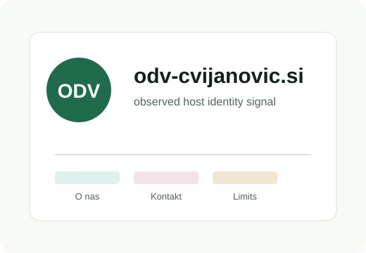
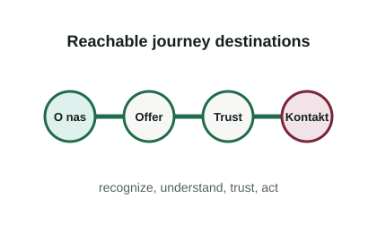
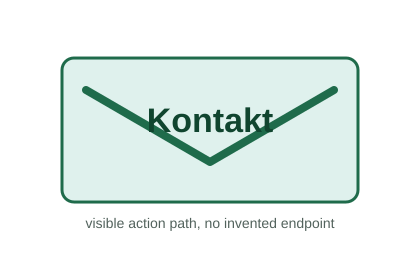
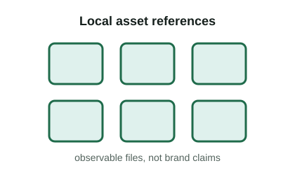
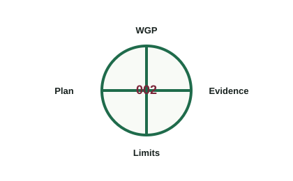

Supported trust cue
A Kontakt path is present, which the WGP treats as a basic trust and accessibility signal.
Generated Website Proposal 002 - quarantined
The proposal preserves the observed host identity signal, the O nas about/company navigation signal, and the Kontakt action path without adding unverified audience, offering, legal, quality, price, guarantee, or contact-detail claims.

Recognize journey step

The exported package establishes odv-cvijanovic.si as the first business identity signal and observes about/company wording in website structure: O nas.
No deterministic audience knowledge is available. This section keeps that uncertainty visible and does not introduce customer segments, personas, industries, geography, or visitor needs.
Understand journey step
The WGP does not provide deterministic offering knowledge. This proposal does not list products, services, prices, guarantees, certifications, process claims, geographic coverage, or outcomes.
The offer area is intentionally reserved for later verified business truth. Until then, offer relevance remains discoverable only as an unresolved source limitation.
Trust journey step
A Kontakt path is present, which the WGP treats as a basic trust and accessibility signal.
Imported evidence includes 384 persisted assets that may carry brand signals. Logo and brand semantics are not confirmed.
No testimonials, certifications, rankings, quality claims, legal claims, reputation claims, or result claims are added.
Act journey step

This proposal reserves a clear contact area because Kontakt is the observed contact/conversion path. No phone number, email address, physical address, form endpoint, response-time promise, or sales claim is included.
Review evidence signalsIteration 2 evidence restoration

Four local visual assets are referenced by the HTML source and listed in the manifest.

Sections expose WGP page, section, validation, and improvement categories as data attributes.
Recognize, understand, trust, and act intents are reachable from primary navigation.
Constraint preservation
Business Discovery and Business Alignment did not provide deterministic audience knowledge.
Business Discovery and Business Alignment did not provide deterministic offering knowledge.
Inherited evidence limitations and import diagnostics are preserved for later validation.
This bundle is not deployed, not published, not compliance, and not Business Approval.